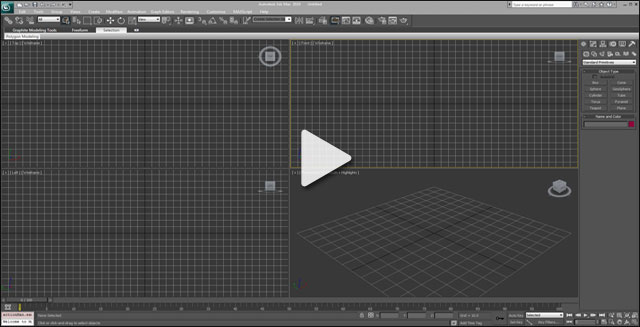
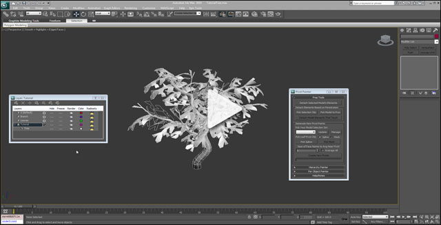
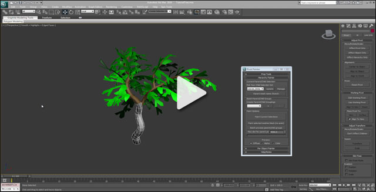
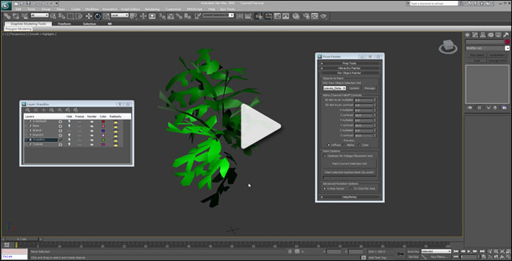

Pivot Painter Tool
Overview
(Click to view video)
Pivot Painter is a MAXScript that stores model pivot and rotation information in the model's vertex data. That information can then be referenced inside of Unreal's shader system to create interactive effects.
The motion shown, in the sample video, is generated in real-time using vertex shaders. Each blade of grass rotates and bends around its root. The trees branches and leaves form a hierarchy and animate around their individual pivots points, while inheriting the parent’s motion. The sub-objects rotation is stored as well, which allows for realistic dynamic reactions to wind forces.
Creating these shaders has been made much simpler with the recent addition of the Pivot Painter material functions in the January 2012 UDK. Sample content also helps by showing how an animation, like the one featured above, can be generated. Retrieving sub-object pivot points is now simply a matter of processing a mesh in 3D Studio Max with the Pivot Painter script, importing the file and creating a material using the Pivot Painter functions. The material functions contain pivot point outputs for both two level hierarchies and single level hierarchies.
Creating motion this way has its benefits. A model processed using this technique is only 18% larger in terms of memory than a standard static mesh. Animations are far less expensive than skeletal animations because they do not need to be stored as they are calculated on the fly. Vertex shader instruction counts are generally less of a performance concern than pixel instruction counts, due to the number of vertices on a model compared to the number of pixels on the screen.
The example shaders in the link below are only the tip of the iceberg in terms of what is possible. Experimenting with the information available may entice one to explore the other possible uses. Player interaction, interesting wind sources, non-foliage related motion and other effects are all possible when given access to sub-object level information.
Installation
The Pivot Painter script is available in the UE3 directory at the following location: [UE3Directory]/Engine/Extras/3dsMaxScripts/PivotPainter.ms
You can also download the Pivot Painter script directly: PivotPainter.ms (right-click, save as to download)
This video covers installing the script and creating a keyboard shortcut and menu to open the Pivot Painter tool.

(Click to view video)
Prep Tools
This video will cover the "Prep Tools" section of the script as well as workflow tips and information about the overall process. Prep Tools contains options to detach model elements as separate objects and several tools to help create new pivot points easily.

(Click to view video)
Hierarchy Painter
This video covers the "Hierarchy Painter" segment of the script. This portion of the tool is used to store child parent relationships like the relation between a branch and leaf for instance, as well as the model pivot and rotation information in the meshes.

(Click to view video)
Per Object Painter
This video goes over the options available under the "Per Object Painter" script section. It also discusses some of the possible uses and some information about how the data is stored on the model.

(Click to view video)
Unreal Shader Examples
A map and package containing material and scene setup for trees and grass using the Pivot Painter tool can be found in your UE3 directory.
-
[UE3Directory]/UDKGame/Content/TestPackages/UDNExamples/PivotPainterExamples.upk
-
[UE3Directory]/UDKGame/Content/Maps/Examples/PivotPainter_Examples.udk
3D Studio Max Example File
The file contains a copy of the tree used in the video tutorials.
- Tree.max (right-click, save as to download)
Requirements
- 3D Studio Max - The script has been tested using 3D Studio Max versions 2010 and 2012.
- The Pivot Painter material functions (available starting with January 2012). It is possible to use the script without the functions but they make the data far easier to use.
Important!
You are viewing documentation for the Unreal Development Kit (UDK).
If you are looking for the Unreal Engine 4 documentation, please visit the Unreal Engine 4 Documentation site.